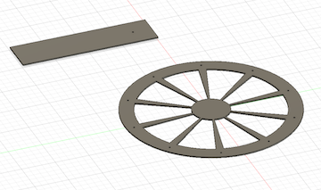
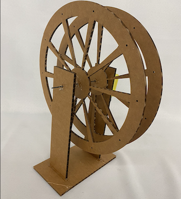
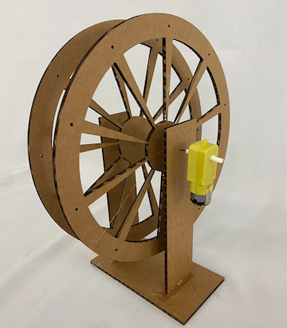

3: Electronics and Tools
This week, we learned about multiple tools in the lab like saws, drills, and soldering tools.
ASSIGNMENT
This class's assignment was to make a kinetic sculpture. I decided to make a ferris wheel, since I had actually made one a long time ago in middle school! I had fun designing this, and it wasn't too challenging to put together.
I took it to the lab, laser cut the design, and then used a metal dowel to hold it together. I fastened the wheels to it, then rested the dowels on a stand that I had made. I hot glued the motor to the dowel, soldered it, and then connected it to the battery and bam! It spun.

This project made me feel super creative, and I'm glad that I was able to make it. The spacing wasn't super well done between the wheels, and I hope to revisit the project and make it better in the future by fixing the spacing and adding cars!
 